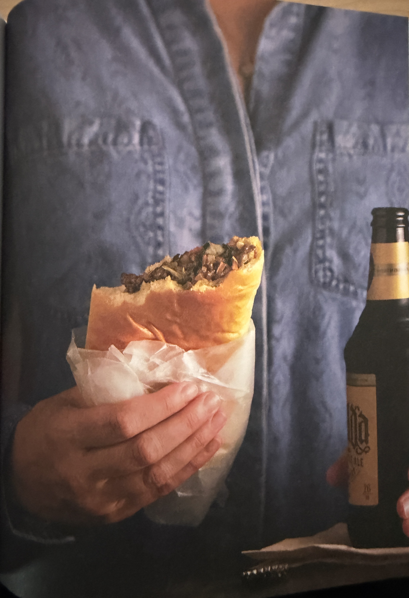

Nebraskan Runzas

Runzas (a.k.a bierocks or krautburgers) are a pocket sandwich, a puffy, yeasted dough baked around a savory meat filling.
2¼ tspinstant yeast42g (3 tbsp)water640g (5 cups)bread flour (~12.7%-14% protein)62½g (5 tbsp)sugar1 tspsalt337g (1½ cup)whole milk2large eggs, at room temperature113g (1 stick)unsalted butter, melted- Oil for bowl
Preheat oven to 350°F / 175°C.
Prepare the dough: Place all the dough ingredients, except the butter, into a bowl of a stand mixer with a dough attachment. Set the mixer on medium speed and knead until the dough is smooth and elastic, 5 minutes. Add the butter and mix for an additional 3 to 4 minutes, until smooth.
Place the dough in an oiled bowl, cover tightly, and let rise in a warm place for 60 minutes.
2 tbspoil1medium-size onion, finely diced2garlic cloves, minced1 lb (450g)ground beef (85% lean)1 tbspWorcestershire sauce400g (4 cups)shredded cabbage (or coleslaw mix)170g (1½ cups)coarsley grated extra-sharp Cheddar cheese- Salt and pepper to taste
Meanwhile, prepare the filling: In a large skillet over medium-high heat, heat the oil. Add the onion and garlic with some salt and sauté until soft, and just beginning to turn golden, about 5 minutes. Add the ground beef and some more salt and cook until browned, 5 minutes more.
Add the Worcestershire sauce and cabbage and cook until tender, about 8 minutes.
Season to taste with salt and pepper.
Remove from heat and allow the filling to cool. Once cooled, stir in the chesse.
Assemble the sandwiches: Turn out the dough onto a lightly floured work surface, and divide into 12 equal portions, about 105 grams each.
Roll each portion into a ball, then use a rolling pin to form the dough balls into rough 6-inch/15 cm circles.
Place a generous ⅓ cup, about 100 grams, of filling in the center of each circle. Fold half of the dough over the filling, and pinch the edges to seal (make sure to seal properly), rolling them up slightly all around the edge.
Place the runzas, seam-side down, on two baking sheets ligned with parchment paper.
28g (2 tbsp)unsalted butter, melted
Bake until golden, 22 to 25 minutes. Let cool on the sheet for 10 minutes. Brush lightly with the melted butter just before serving. Any leftovers reheat well the next day.